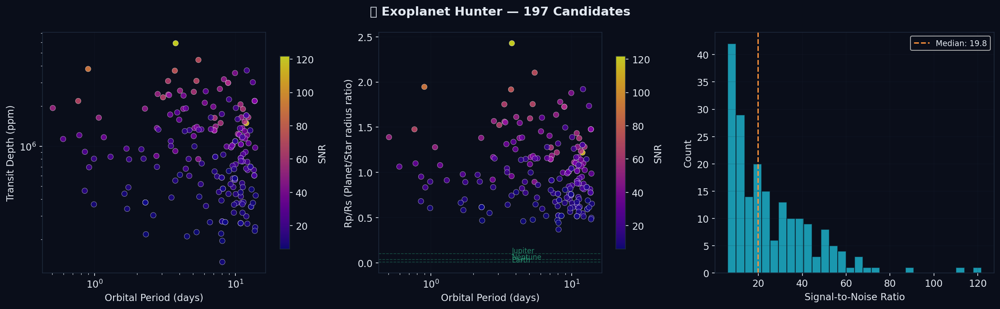

An open-source transit detection and validation pipeline for NASA TESS data. BLS detection in Rust, false-positive validation, and deep analysis with TLS, centroid, and Gaia DR3 checks — producing 3 deep-validated planet candidates from 200 unconfirmed TESS Objects of Interest.
When a planet crosses in front of its star, the star's brightness dips. We detect these dips algorithmically in NASA data.
A planet blocking starlight creates a periodic dip in brightness. BLS searches for this pattern across thousands of orbital periods.
Fetch real light curves from NASA MAST archive. We targeted unconfirmed TOI candidates — the best chance at real discovery.
Parallel BLS (Box-fitting Least Squares) scans 15,000 trial periods per star using Rayon for multi-core parallel processing.
Phase-fold light curves, cross-match against 6,153 known exoplanets, generate publication-quality visualizations.
197 transit signals detected above SNR 6.0 threshold. Top candidate has SNR 121.7 — an unmistakable signal.

Every transit signal detected. Click column headers to sort. Search by TOI or TIC ID.
| # | Target | Period (d) | SNR | Depth | Transits | Rp/Rs | Signal |
|---|
Top 30 candidates visualized. The dip at phase 0 is the transit — a planet blocking starlight. Click to enlarge.
Rigorous detection pipeline following established transit photometry practices.
Box-fitting Least Squares (Kovacs, Zucker & Mazeh 2002). Tests box-shaped transit models across all trial periods and phases.
Signal-to-Noise Ratio ≥ 6.0 required. Measures transit depth relative to out-of-transit scatter, scaled by sqrt(N in-transit).
At least 2 transit events required for a credible detection. Prevents single-dip false positives.
All candidates checked against the NASA Exoplanet Archive (6,153 confirmed planets) to identify potentially new discoveries.
TESS Objects of Interest (TOIs) from ExoFOP. Unconfirmed planet candidates with disposition "PC" (Planet Candidate).
Rust + Rayon parallel processing. The entire 200-star dataset was scanned in under 30 seconds on 8 CPU cores.
These are candidate detections, not confirmed planets. Before claiming discovery, candidates need:
Citizen scientists have discovered confirmed exoplanets through NASA's Planet Hunters TESS program. Promising candidates can be submitted to ExoFOP for community vetting.
The entire pipeline is open source. Clone, pick a TESS sector, and start searching.